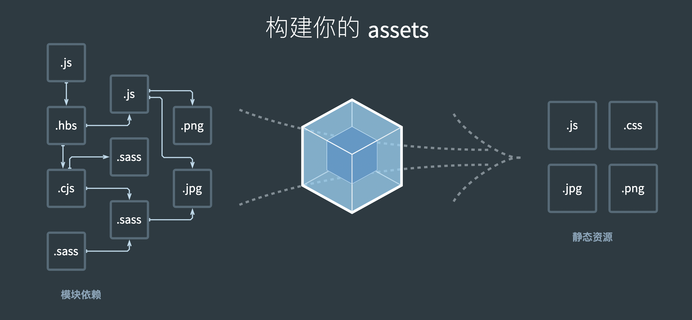

webpack 是我做前端开发时一个非常重要的工具，也是现在前端工程化一个非常重要的工具
之前使用的时候基本只是知道它大概怎么使用，但并没有深入探究。这次想深入总结一下自己对 webpack 的学习
# webpack 是什么？
官网上是这么介绍 webpack 的：本质上，webpack 是一个用于现代 Javascript 应用程序的静态模块打包工具。当 webpack 处理应用程序时，它会在内部构建一个依赖图，这个依赖图对应映射到项目所需的每一个模块，并生成一个或多个 bundle。

现代前端开发技术不断的增长，为了提高开发效率，新的工具和技术也不断的出现，比如 scss、typescript 等，他们这些都有一个共同点，就是源代码是无法直接执行的，需要特定的工具进行转换才可以执行，而 webpack 正是做了这一件事情。
简单来说，就是能将项目中的各个不同类型的文件，通过构建、打包将其打包成可执行的 js、css、html 文件和静态资源文件。
发展到现在，webpack 的功能越来越强大，它的功能有以下这些：
- 代码转换：将 Scss 文件编译成 css、将 typescript 文件编译成 JavaScript 等
- 文件优化：压缩 JS、CSS、HTML 代码，压缩合并图片
- 代码分割：提取多个页面的公共代码，懒加载资源
- 模块合并：构建时将模块分类合并成一个文件
- 热重载：监听本地代码的变化，自动重新构建、刷新，便于开发。
- 自动发布：更新代码后，自动构建出线上发布代码并传输给发布系统。
# webpack 核心概念
要了解 webpack 的工作原理和流程，首先需要了解一些基本的核心概念。
webpack 虽然不配置也可以使用，但是我们经常需要用配置做一些调整，一般在项目根目录下新建一个 webpack.config.js 来添加配置项。
# 入口（entry）
既然是打包，总得有个打包的起点，这个起点就称为入口。入口是 webpack 构建的起点，它会从这个起点中构建一个内部依赖图，找出依赖的所有模块。
它的默认值是./src/index.js，但是我们可以在 webpack 配置文件中修改它，比如
webpack.config.js
module.exports = { | |
entry: './src/entry.js'; | |
} |
而且，入口可以不止一个，按照经验，通常在多页应用中，一个 HTML 文档使用一个入口。
# chunk
chunk 是代码块的意思，一个 chunk 由多个模块组合而成，一般一个入口及这个入口依赖的所有模块对应一个 chunk。
# 出口（output）
打包肯定是有结果的，就是所谓的出口。output 告诉 webpack 在哪里输出它所创建的 bundle 还有命名规范。
它的默认值是./dist/main.js，但是也可以像入口一样进行配置
const path = require('path'); | |
module.exports = { | |
... | |
output:{ | |
path:path.resolve(__dirname,'dist'), | |
filename:'my.bundle.js' | |
}, | |
}; |
如果配置文件中设置了多个入口，那就需要修改 filename 为占位符来对应生成不同名字。
# loader
webpack 原本只能理解 JS 文件和 JSON 文件，如果要处理其他类型，就需要用到 loader。
简单来说，可以把 loader 比喻成一个翻译，它识别特定的文件类型，并将其转换成另外一种类型，供程序使用及添加到依赖图之中。
像我们刚刚说到的 Scss、typescript 源代码文件在 webpack 中都需要对应的 loader 进行转换。
在 webpack 的配置中，loader 有两个属性：
- test：识别那些文件需要被转换
- use：那些文件要使用什么 loader 进行转换。
webpack.config.js
const path = require('path'); | |
module.exports = { | |
// 其他配置项省略 | |
module: { | |
rules: [ | |
{ | |
test: /\.scss$/, | |
use: ['style-loader','css-loader','scss-loader'] | |
} | |
], | |
}, | |
}; |
这里就是告诉 webpack：“webpack，你遇到 scss 结尾的文件时使用 scss-loader、css-loader、style-loader 来帮我把它转换”
需要注意的是，use 的属性是一个数组，表示要使用的 loader，而且执行顺序是由后到前。
loader 接收一个文件和配置项作为输入，然后将对应的文件转换后输出。
# plugin
loader 用于转换文件，而 plugin（插件）有着范围更广的任务，它是用来扩展 webpack 功能的，通过在 webpack 构建流程中注入钩子实现。
想要使用一个插件，只需要 require 它，然后把它添加到 plugins 数组中，比如这样：
const HtmlWebpackPlugin = require('html-webpack-plugin'); // 通过 npm 安装 | |
module.exports = { | |
...// 其他省略 | |
plugins:[ | |
new HtmlWebpackPlugin({template:'./src/index.html'}); | |
] | |
} |
HtmlWebpackPlugin 是用于生成 html 文件、并自动在这个文件中引入相关入口 chunk 的 js 文件和抽取出来的 css 文件的插件
# compiler 对象
它的实例包含了完整的 webpack 配置，全局只有一个 compiler 对象。可以通过这个对象访问 webpack 的内部环境。
# compilation 对象
当 webpack 以开发模式运行时，每当监测到文件变化时，就会创建一个新的 compilation 对象。对象包含了构建过程中所有的构建数据。
# webpack 编译结果
不同模块规范下的打包结果有一些细微的差别，但总体大致是一样的。
- webpack 的打包结果就是一个 IIFE（立即调用函数表达式），它接收一个对象 modules 作为参数，这个参数对象的 key 是依赖路径，value 是简单处理后的脚本
- 打包结果中定义了一个重要的模块加载函数__webpack_require__
- 首先使用模块加载函数__webpack_require__去加载入口模块
- 加载函数使用了闭包变量 installedModules，将已加载过的模块存在内存中。
# webpack 工作流程
# 简单理解版本
Webpack 工作时，会首先读取项目根目录下的 webpack.config.js 来获取配置项（当然，从 4.0.0 版本开始可以不用该文件配置，使用默认配置），配置项是一个对象，使用 module.export 导出，通常可以指定打包的入口文件（entry）、打包的输出相关（output），如输出文件名、位置等，以及指定文件转换使用的 loader。
获取配置项后，会对每一个入口进行如下的工作：从入口的模块开始递归解析该模块依赖的所有模块，每找到一个模块，会根据配置的 loader 进行文件转换（webpack 原本只支持对 js 和 json 的解析，其他文件需要对应的 loader 提供支持），然后这些模块以入口为分组，每个入口及其所有依赖的模块会被分到一个组（chunk），而且每一个入口对应一个依赖图。最后将所有 chunk 转换成文件输出。
这是一个正常的 webpack 工作流程，除此之外，还可以在 webpack 正常工作流程中使用插件，注入钩子在特定工作流程中对打包结果进行干预。
# 总结
Webpack 是当下最流行的前端工程构建工具，它是用于打包一个工程项目静态模块的打包工具，它的出现大大方便了日常开发。
各种新特性、新语言、新框架的出现，提高了我们的开发效率，如 typescript、sass、babel、vue 等。但是我们开发出来的项目文件最终还是应该打包成一堆 html、css、js 文件，尽管这些新特性的创造者会提供一个工具来进行转换，但是一个个转换我们的开发文件的工作量是巨大的，这个时候 webpack 就开始发挥它的威力了。
Webpack 的出现极大的简化了转换文件的流程，更好的去开发，现在各种新特性通常都会有可以集成到 webpack 开发的 loader。
# 面试题
# loader 和 plugin 的区别？
loader 主要是提供了一个文件转换的能力。webpack 原生只支持解析 js 和 json 文件，而 loader 让 webpack 有了加载其他模块的能力。
plugin 主要是插件，用于扩展 webpack 的功能，比如抽离代码、压缩、配置开发工具等功能。
# 10.25 补充
webpack 构建依赖图的时候，遇到不同的模块就根据 webpack 配置文件中配置的 loader 进行转换。
plugin 更像一个类，webpack 会先把 plugin 实例化（new 的时候对构造函数传入 options），然后调用 plugin 的 apply 方法（传入 complier）
编写 plugin 的时候只需要在 apply 方法中对 webpack 广播出来的各种事件钩子根据需要注册处理函数，如 compiler.hooks.hookname.tap (className,(…) => {…})
# loader 编写要点
loader 实质上是一个函数，它接收前一个 loader 的返回值作为参数输入（如果是配置的第一个 loader 则就是源文件内容），一般是字符串 or 二进制 buffer，经过一些处理后返回对应的类型。
简单情况下，就是这样：
module.exports = function(source){ | |
//... 一些操作 | |
return content; | |
} |
当然实际上我们不止是需要做一些操作，我们经常会看到对一个 loader 进行配置，然后定制化的处理文件。
- 所以我们还需要获取开发者配置的 options
- 以及对 loader 处理过程中的错误捕获、导出 sourceMap 等信息
- 还有些 loader 可能是异步的，比如 less-loader 就是异步的
对于前两点，可以这样
const loaderUtils = require('loader-utils'); | |
module.exports = function(source){ | |
const options = loaderUtils.getOptions(this);// 获取开发者配置的配置对象 | |
//.... 一些工作 | |
this.callback(error,content,sourceMap,ast); | |
// 四个参数分别是：loader 出错时向外抛出的错误，导出的内容，sourceMap，本次编译生成的抽象语法树 | |
} |
获取配置传入的 this 实际指向一个叫 loaderContext 的 loader-runner 特有对象，详情请读 webpack loader 部分的源码
对于异步 loader 的方案，可以使用简单的 async/await，也可以使用 webpack 提供的 this.async。调用 this.async 会返回一个回调，可以在异步操作完成后调用（这样就知道异步 loader 结束了），例如：
const loaderUtils = require('loader-utils'); | |
module.exports = async function(source){ | |
const options = loaderUtils.getOptions(this); | |
function delay(){ | |
return new Promise((resolve,reject) => { | |
setTimeout(() => resolve(source),1000); | |
}) | |
} | |
const callback = this.async(); | |
delay().then(res => callback(null,res)); | |
} |
# plugin 编写要点
在 webpack 构建的生命周期中，webpack 会广播许多事件，我们可以通过监听这些事件，注册事件处理函数去干预编译，改变输出结果。
简单来说，plugin 更像是一个类（当然你用函数也不是不行，只要给它的原型定义一个以 compiler 对象为参数的 apply 方法即可）
webpack 会先把插件实例化（传入配置信息），然后调用实例的 apply 方法。一般 apply 方法内是对 webpack 各种事件钩子注册函数，调用 apply 方法时就会将这些钩子注册好。然后在真正 webpack 工作各个阶段的时候，广播各种事件，并调用该事件的所有钩子（自然就会调用某个插件的该事件钩子函数）
class myPlugin{ | |
constructor(options){ | |
this.options = options; | |
} | |
apply(compiler){ | |
compiler.hooks.具体hook的名字.tap('myPlugin',(compilation, callback) => { | |
setTimeout(() => { | |
callback(); | |
},1000); | |
});// 注册钩子，会在事件触发时执行操作，具体钩子去官网看 | |
} | |
} |
- 编写一个带 apply 方法的 class
- 插入指定事件钩子
- 使用 compilation 修改打包内容
# 与其他打包工具的对比
# Rollup.js
相比 webpack，Rollup.js 有以下几个特点：
- 仅支持 ESNext 模块
- 自带 tree shaking 功能
- 生成的冗余代码比较少
有那么一句名言：“建库用 rollup，其他场景用 webpack”，当然这并不是绝对的。
rollup 和 webpack 不同的地方主要是 rollup 会将模块按照代码顺序引入同一个文件来解决模块依赖问题，所以无法做到拆包（模块已经完全透明了）。
# Vite
现在的 Vite 也非常的火，Vite 的火主要也是 webpack 衬托起来的。前面也说道，webpack 在冷启动的时候要遍历整个应用模块冷启动，在 HMR（hot module replacement，模块热更新）的时候也会随着应用的增大而变慢。
相比之下，Vite 做了几点让 HMR 的速度快了不少。比如将代码分析为源码和依赖，预构建依赖、源码按需提供。
具体特点就不说了，看官方文档就可以，补充资料：vite 多久后能干掉 webpack？ - 知乎 (zhihu.com)